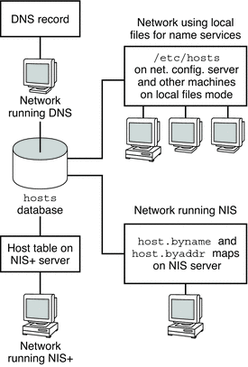

|
||||||||||||||||||||||||||||
|
1. Solaris TCPIP Protocol Suite (Overview) 2. Planning an IPv4 Addressing Scheme (Tasks 3. Planning an IPv6 Addressing Scheme (Overview) 4. Planning an IPv6 Network (Tasks) 5. Configuring TCP/IP Network Services and IPv4 Addressing (Tasks) 6. Administering Network Interfaces (Tasks) 7. Enabling IPv6 on a Network (Tasks) 8. Administering a TCP/IP Network (Tasks) 9. Troubleshooting Network Problems (Tasks) 10. TCP/IP and IPv4 in Depth (Reference) inetd Internet Services Daemon Routing Protocols in the Solaris OS 12. About Solaris DHCP (Overview) 13. Planning for DHCP Service (Tasks) 14. Configuring the DHCP Service (Tasks) 15. Administering DHCP (Tasks) 16. Configuring and Administering DHCP Clients 17. Troubleshooting DHCP (Reference) 18. DHCP Commands and Files (Reference) 19. IP Security Architecture (Overview) 21. IP Security Architecture (Reference) 22. Internet Key Exchange (Overview) 24. Internet Key Exchange (Reference) 25. Solaris IP Filter (Overview) 28. Administering Mobile IP (Tasks) 29. Mobile IP Files and Commands (Reference) 30. Introducing IPMP (Overview) 31. Administering IPMP (Tasks) Part VI IP Quality of Service (IPQoS) 32. Introducing IPQoS (Overview) 33. Planning for an IPQoS-Enabled Network (Tasks) 34. Creating the IPQoS Configuration File (Tasks) 35. Starting and Maintaining IPQoS (Tasks) 36. Using Flow Accounting and Statistics Gathering (Tasks) |
Network Databases and the nsswitch.conf FileThe network databases are files that provide information that is needed to configure the network. The network databases follow:
As part of the configuration process, you edit the hosts database and the netmasks database, if your network is subnetted. Two network databases, bootparams and ethers, are used to configure systems as network clients. The remaining databases are used by the operating system and seldom require editing. Although nsswitch.conf file is not a network database, you need to configure this file along with the relevant network databases. nsswitch.conf specifies which name service to use for a particular system: local files, NIS, DNS, or LDAP. How Name Services Affect Network DatabasesThe format of your network database depends on the type of name service you select for your network. For example, the hosts database contains, at least the host name and IPv4 address of the local system and any network interfaces that are directly connected to the local system. However, the hosts database could contain other IPv4 addresses and host names, depending on the type of name service on your network. The network databases are used as follows:
Note - DNS boot and data files do not correspond directly to the network databases. The following figure shows the forms of the hosts database that are used by these name services. Figure 10-2 Forms of the hosts Database Used by Name ServicesThe following table lists the network databases and their corresponding local files and NIS maps. Note - The ipnodes database is removed from Solaris releases after Solaris 10 11/06. Table 10-1 Network Databases and Corresponding Name Service Files
This book discusses network databases as they are viewed by networks that use local files for name services.
Refer to System Administration Guide: Naming and Directory Services (DNS, NIS, and LDAP) for information on network databases correspondences in NIS, DNS, and LDAP. nsswitch.conf FileThe /etc/nsswitch.conf file defines the search order of the network databases. The Solaris installation program creates a default /etc/nsswitch.conf file for the local system, based on the name service you indicate during the installation process. If you selected the “None” option, indicating local files for name service, the resulting nsswitch.conf file resembles the following example. Example 10-4 nsswitch.conf for Networks Using Files for Name Service# /etc/nsswitch.files: # # An example file that could be copied over to /etc/nsswitch.conf; # it does not use any naming service. # # "hosts:" and "services:" in this file are used only if the # /etc/netconfig file contains "switch.so" as a # nametoaddr library for "inet" transports. passwd: files group: files hosts: files networks: files protocols: files rpc: files ethers: files netmasks: files bootparams: files publickey: files # At present there isn't a 'files' backend for netgroup; the # system will figure it out pretty quickly, # and won't use netgroups at all. netgroup: files automount: files aliases: files services: files sendmailvars: files The nsswitch.conf(4) man page describes the file in detail. The basic syntax is shown here: database name-service-to-search The database field can list one of many types of databases that are searched by the operating system. For example, the field could indicate a database that affects users, such as passwd or aliases, or a network database. The parameter name-service-to-search can have the values files, nis, or nis+ for the network databases. The hosts database can also have dns as a name service to search. You can also list more than one name service, such as nis+ and files. In Example 10-4, the only search option that is indicated is files. Therefore, the local system obtains security and automounting information, in addition to network database information, from files that are located in its /etc and /etc/inet directories. Changing nsswitch.confThe /etc directory contains the nsswitch.conf file that is created by the Solaris installation program. This directory also contains template files for the following name services:
If you want to change from one name service to another name service, you can copy the appropriate template to nsswitch.conf. You can also selectively edit the nsswitch.conf file, and change the default name service to search for individual databases. For example, on a network that runs NIS, you might have to change the nsswitch.conf file on network clients. The search path for the bootparams and ethers databases must list files as the first option, and then nis. The following example shows the correct search paths. Example 10-5 nsswitch.conf for a Client on a Network Running NIS# /etc/nsswitch.conf:# . . passwd: files nis group: file nis # consult /etc "files" only if nis is down. hosts: nis [NOTFOUND=return] files networks: nis [NOTFOUND=return] files protocols: nis [NOTFOUND=return] files rpc: nis [NOTFOUND=return] files ethers: files [NOTFOUND=return] nis netmasks: nis [NOTFOUND=return] files bootparams: files [NOTFOUND=return] nis publickey: nis netgroup: nis automount: files nis aliases: files nis # for efficient getservbyname() avoid nis services: files nis sendmailvars: files For complete details on the name service switch, refer to System Administration Guide: Naming and Directory Services (DNS, NIS, and LDAP). bootparams DatabaseThe bootparams database contains information that is used by systems that are configured to boot in network client mode. You need to edit this database if your network has network clients. See Configuring Network Clients for the procedures. The database is built from information that is entered into the /etc/bootparams file. The bootparams(4) man page contains the complete syntax for this database. Basic syntax is shown here: system-name file-key-server-name:pathname For each network client system, the entry might contain the following information: the name of the client, a list of keys, the names of servers, and path names. The first item of each entry is the name of the client system. All items but the first item are optional. An example follows. Example 10-6 bootparams Databasemyclient root=myserver : /nfsroot/myclient \ swap=myserver : /nfsswap//myclient \ dump=myserver : /nfsdump/myclient In this example, the term dump= tells client hosts not to look for a dump file. Wildcard Entry for bootparamsIn most instances, use the wildcard entry when editing the bootparams database to support clients. This entry follows: * root=server:/path dump=: The asterisk (*) wildcard indicates that this entry applies to all clients that are not specifically named within the bootparams database. ethers DatabaseThe ethers database is built from information that is entered into the /etc/ethers file. This database associates host names to their Media Access Control (MAC) addresses. You need to create an ethers database only if you are running the RARP daemon. That is, you need to create this database if you are configuring network clients. RARP uses the file to map MAC addresses to IP addresses. If you are running the RARP daemon in.rarpd, you need to set up the ethers file and maintain this file on all hosts that are running the daemon to reflect changes to the network. The ethers(4) man page contains the complete syntax for this database. The basic syntax is shown here: MAC-address hostname #comment
The equipment manufacturer provides the MAC address. If a system does not display the MAC address during the system booting process, see your hardware manuals for assistance. When adding entries to the ethers database, ensure that host names correspond to the primary names in the hosts , not to the nicknames, as follows. Example 10-7 Entries in the ethers Database8:0:20:1:40:16 fayoum 8:0:20:1:40:15 nubian 8:0:20:1:40:7 sahara # This is a comment 8:0:20:1:40:14 tenere Other Network DatabasesThe remaining network databases seldom need to be edited. networks databaseThe networks database associates network names with network numbers, enabling some applications to use and display names rather than numbers. The networks database is based on information in the /etc/inet/networks file. This file contains the names of all networks to which your network connects through routers. The Solaris installation program configures the initial networks database. However, if you add a new network to your existing network topology, you must update this database. The networks(4) man page contains the complete syntax for /etc/inet/networks. The basic format is shown here: network-name network-number nickname(s) #comment
You must maintain the networks file. The netstat program uses the information in this database to produce status tables. A sample /etc/networks file follows. Example 10-8 /etc/networks File#ident "@(#)networks 1.4 92/07/14 SMI" /* SVr4.0 1.1 */ # # The networks file associates Internet Protocol (IP) network # numbers with network names. The format of this file is: # # network-name network-number nicnames . . . # The loopback network is used only for intra-machine communication loopback 127 # # Internet networks # arpanet 10 arpa # Historical # # local networks eng 192.168.9 #engineering acc 192.168.5 #accounting prog 192.168.2 #programming protocols DatabaseThe protocols database lists the TCP/IP protocols that are installed on your system and their protocol numbers. The Solaris installation program automatically creates the database. This file seldom requires any administration. The protocols(4) man page describes the syntax of this database. An example of the /etc/inet/protocols file follows. Example 10-9 /etc/inet/protocols File# # Internet (IP) protocols # ip 0 IP # internet protocol, pseudo protocol number icmp 1 ICMP # internet control message protocol tcp 6 TCP # transmission control protocol udp 17 UDP # user datagram protocol services DatabaseThe services database lists the names of TCP and UDP services and their well-known port numbers. This database is used by programs that call network services. The Solaris installation automatically creates the services database. Generally, this database does not require any administration. The services(4) man page contains complete syntax information. An excerpt from a typical /etc/inet/services file follows. Example 10-10 /etc/inet/services File# # Network services # echo 7/udp echo 7/tcp echo 7/sctp6 discard 9/udp sink null discard 11/tcp daytime 13/udp daytime 13/tcp netstat 15/tcp ftp-data 20/tcp ftp 21/tcp telnet 23/tcp time 37/tcp timeserver time 37/udp timeserver name 42/udp nameserver whois 43/tcp nickname |
|||||||||||||||||||||||||||
|